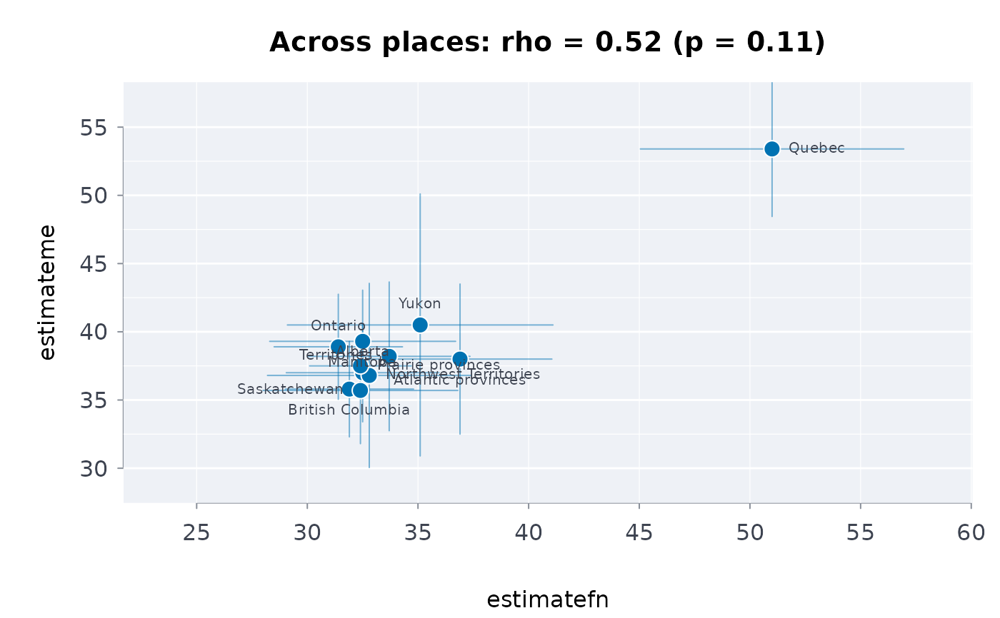

Connection across places: does one indicator rise where another does?
Source:R/indigenous_frameworks.R
connassoc.RdFor two indicators published for the same places (regions, provinces, Inuit regions), their rank correlation across places, an exact permutation p-value, and an interval that carries the sampling error of the published estimates: for connection to land and wellness, community belonging and mental health, education and health.
Usage
connassoc(
data,
place,
x,
y,
xlo = NULL,
xup = NULL,
ylo = NULL,
yup = NULL,
reps = 10000,
seed = 1,
conflvl = 0.95
)Arguments
- data
A data frame, one row per place.
- place
Column of place names.
- x, y
Columns of the two indicators.
- xlo, xup, ylo, yup
Optional columns of their published limits (for the interval).
- reps
Draws for the interval and, past 8 places, for the p-value (default 10,000).
- seed
Seed for the draws (default 1).
- conflvl
Confidence level (default 0.95).
Value
A list of class rmbl_connection: data (the places used),
rho, p_value, exact, rholo, rhoup,
n.
Details
Mashford-Pringle and Stewart (2019) describe the land as “an
instrumental part
of all aspects of Indigenous life including health and well-being”; Mashford-Pringle
(2016) describes Indigenous health and education as interconnected. Across places, that
connection has a testable shadow: where more people are on the land (or belong, or
finish school), do more report wellness? This function measures it by Spearman's
\(\rho\). Its p-value is exact when there are at most 8 places (over all \(n!\)
orderings) and a Monte Carlo estimate otherwise (\((b + 1)/(R + 1)\) for \(b\) of
\(R\) = reps random orderings at least as extreme). Each estimate carries
sampling error, so rholo and rhoup are the quantiles of
\(\rho\) over reps draws of both indicators from normal distributions with
their published standard errors. That is a sensitivity band, not a confidence interval
for a correlation across places: it shows how much the published sampling error alone
moves \(\rho\) for these places, it is pulled toward 0 (noise is added to estimates
that are already noisy), and it ignores the sampling of the places themselves. Quality
flags are not carried: filter suppressed rows out first.
This is an association across places (an ecological one). It cannot say that connection to land makes a person well, which needs data on persons; a handful of places gives little power; and a correlation is not a measure of the relationship the authors describe. It is a description of how the published indicators move together.
Acknowledgement
This estimator puts to quantitative use the work of Professor Angela Mashford-Pringle (Timiskaming First Nation) and Professor Suzanne Stewart (Yellowknives Dene First Nation), both of the University of Toronto.
See the acknowledgements of the first-nations-metis-inuit-health vignette.
References
Mashford-Pringle A, Stewart SL (2019). Akiikaa (it is the land): exploring land-based experiences with university students in Ontario. Global Health Promotion 26(3_suppl):64-72. doi:10.1177/1757975919828722
Mashford-Pringle A (2016). Aboriginal health and Aboriginal education are interconnected. Research in the Sociology of Health Care 34:85-96. doi:10.1108/s0275-495920160000034005
Examples
# across regions, 2022 (table 41-10-0067-01): where First Nations people report
# excellent or
# very good mental health, do Metis people living in the same region too?
mh <- indiex("mentalhealth")
mh <- mh[mh$rating == "Excellent or very good" & mh$region != "Canada", ]
fn <- mh[mh$group == "First Nations", ]
me <- mh[mh$group == "M\u00e9tis", ]
d <- merge(fn, me, by = "region", suffixes = c("fn", "me"))
ca <- connassoc(d, "region", "estimatefn", "estimateme", "lowerfn",
"upperfn",
"lowerme", "upperme")
ca
#> Rank correlation across 11 places: rho = 0.52, permutation p = 0.106; with the published sampling error, 95% interval -0.19 to 0.77
#> An association across places: it does not show that one causes the other for any person.
plot(ca)
